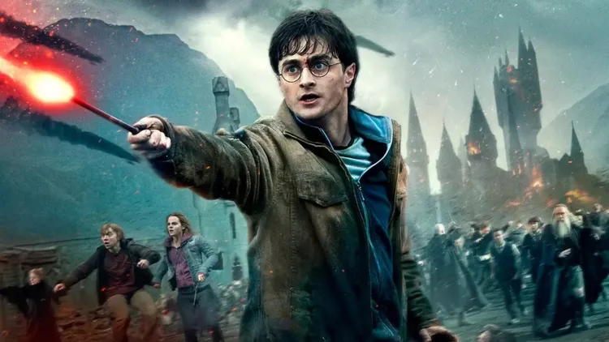
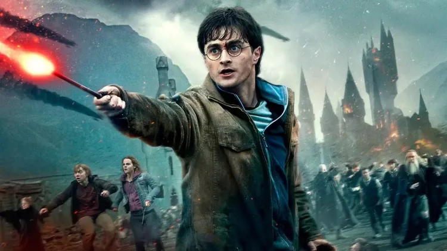

Harry Potter es una de las sagas de fantasía más importantes de la literatura juvenil.
A lo largo de siete libros y ocho películas, seguimos las aventuras de un joven mago en su lucha contra el mal.
 Ver páginaHarry Potter es una de las sagas de fantasía más importantes de la literatura juvenil.
A lo largo de siete libros y ocho películas, seguimos las aventuras de un joven mago en su lucha contra el mal.
 Ver páginaHarry James Potter [JÁ-ri DCHÉIMS PÓ-ter][8] (pronunciación inglesa) (n. el 31 de julio de 1980), es un mago de sangre mestiza y el único hijo de James y Lily Potter . Es la única persona conocida que ha sobrevivido a la maldición de Avada Kedavra, haciéndolo en dos ocasiones. Ambas veces la maldición fue conjurada por Lord Voldemort. La primera, en un intento de matar a Harry de bebé, conlleva la primera derrota de Voldemort y al final de la Primera Guerra Mágica. La segunda, (en la que a diferencia de la primera Voldemort logra matarlo efectivamente pero luego el niño revive) destruye una parte más del alma de Voldemort y lleva a su destrucción definitiva y al final de la Segunda Guerra Mágica.